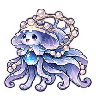
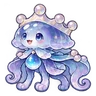

No.064
スイリンカ
潮 進化形
背びれの輪で潮流を読み取る。海底へ届く低い歌は離れた群れを結ぶ。
基本データ
| 図鑑番号 | No.064 |
|---|---|
| タイプ | 潮タイプ |
| 進化 | ミズカネからLv.32で進化 |
| 入手方法 | 潮汐の地下水廊（Lv.37〜40）、深淵昇降坑（Lv.47〜50）、鯨骨の社（Lv.57〜60）、蛍の川辺（Lv.84〜87）の草むらに出現。 |
Lv.50の能力値
| 体力 | 304 | |
|---|---|---|
| 物理攻撃 | 177 | |
| 物理防御 | 120 | |
| 特殊攻撃 | 180 | |
| 特殊防御 | 119 | |
| 素早さ | 123 | |
| 命中 | 98 | |
| 回避 | 102 |
冒険中の能力値はレベルに応じて上がります。オンライン対戦の通常レンタルはLv.50で統一されます。
覚える技
| 技 | タイプ | 分類 | 威力 | 命中 | PP | 効果 |
|---|---|---|---|---|---|---|
| 深海の呼び声 | 潮 | 特殊 | 44 | 90 | 10 | 潮の力を解き放つ強力な特殊攻撃。6%で水封にすることがある。 |
| 雨糸の縫針 | 潮 | 特殊 | 40 | 90 | 15 | 潮の力で守りを貫く特殊攻撃。防御の技による軽減を受けない。6%で水封にすることがある。 |
| 朱灯の行進 | 灯 | 特殊 | 34 | 96 | 15 | 灯の力を込めた特殊攻撃。威力と命中のバランスがよい。10%で灯焼けにすることがある。 |
| 霧のまもり | 潮 | 防御 | — | — | 15 | 潮の守りで、次に受ける攻撃のダメージを半分にする。素早さに関係なく先に構える。 |
進化の系譜
- ルロンLv.16 ▶

ミズカネLv.32 ▶- スイリンカ
タイプ相性
潮タイプの技は灯タイプに強く（1.5倍）、芽タイプの技を受けると効果が大きくなります。同じタイプの技を使うと威力が1.15倍になります。